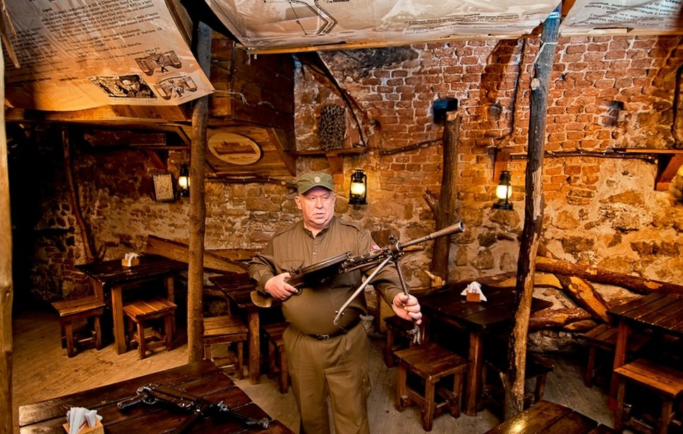
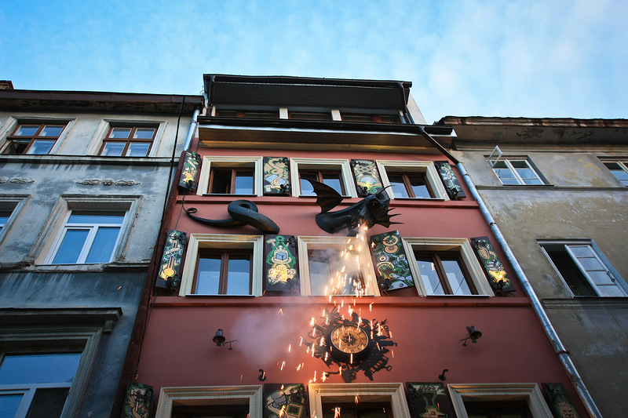
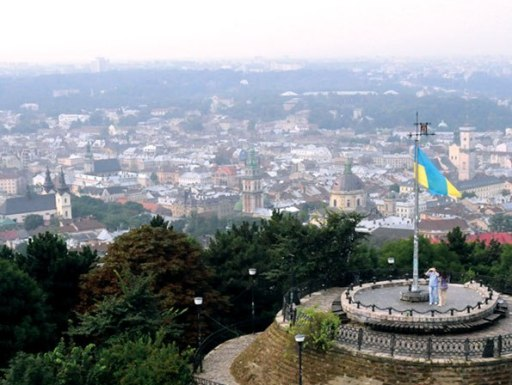
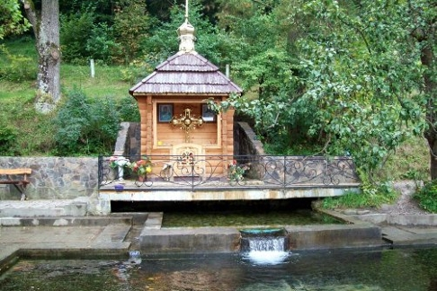

Мої улюблені місця



Дім Легенд
Кнайпа, лише в твоїй уяві. Будинок сажотруса
та його сім'ї,
це місце де живуть львівські легенди.
Детальніше

Висо́кий За́мок (пол. Wysoki Zamek) — замок, збудований під керівництвом Галицько-Волинського князя Лева Даниловича.
